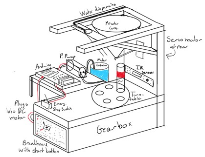
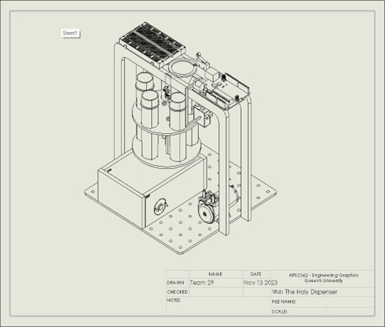

A prototype fluid dispenser for use in medical facilities with hands-free dispensing, using an IR sensor, pump, vials, turntable and a custom gearbox. An idea based on Vancouver's pilot project machine called MySafe.
Key Features
Custom 5-gear gearbox and 3D printed housing
167:1 high torque gear ratio for precise vial rotations and alignment with dispensing nozzle
Hands-free operation through the use of IR sensors

Initial prototype drawing

CAD drawing of the complete fluid dispenser assembly